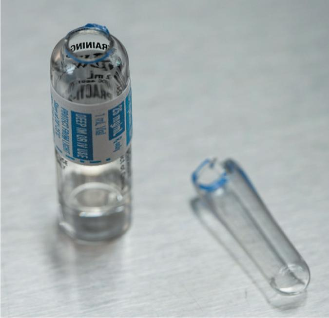
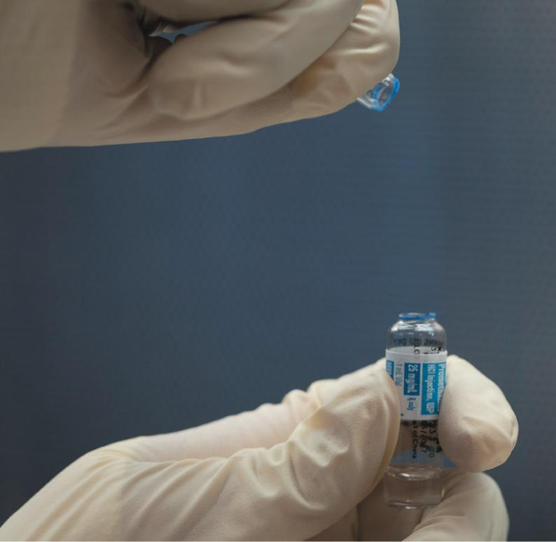
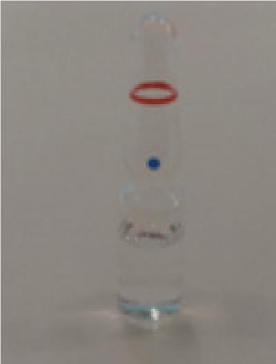
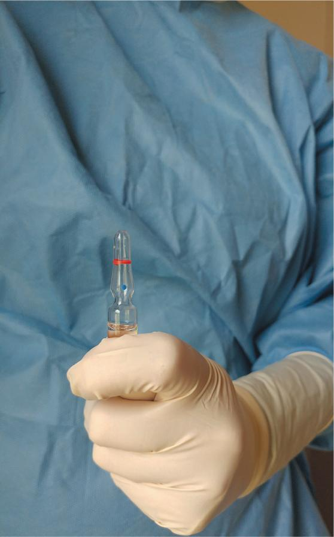
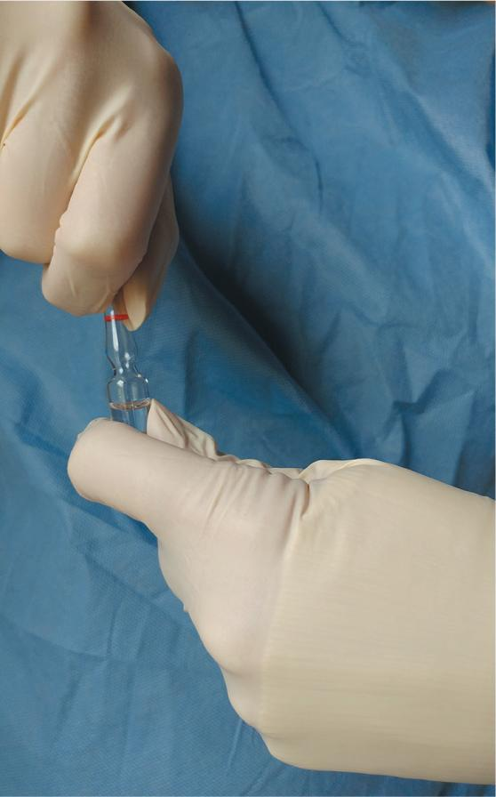
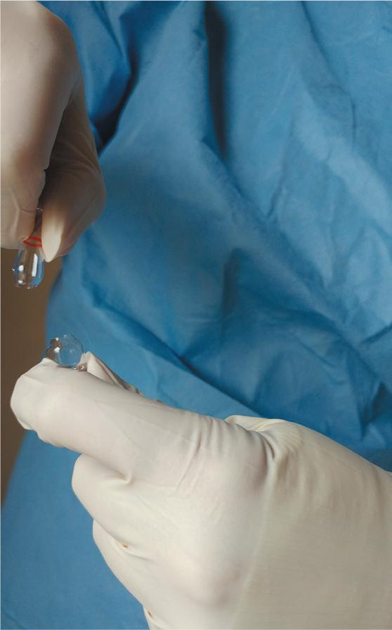
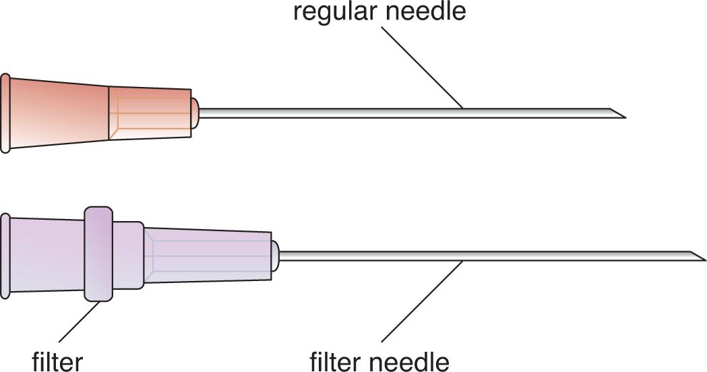
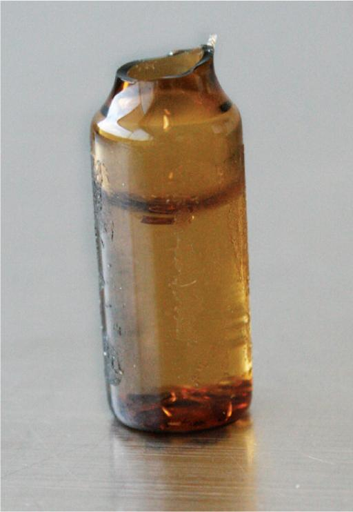
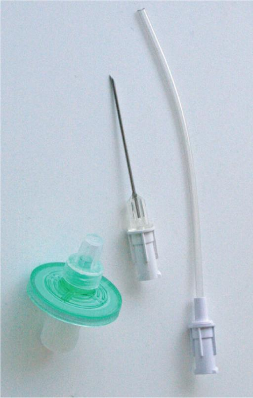

PART 2: TRAINING
Before performing this lab, preview the accompanying Chapter 12 Procedural Lab Competency Assessment Checklist in Appendix B.
12.5 Understand the Resources and Supplies
USP <797> standards address the preparation of ampule-based, small-volume CSPs. This chapter and the corresponding lab provide supplies and procedures that are in alignment with these standards.
Essential Supplies
Most sterile compounding procedures require the same essential supply items to be available for use in both an anteroom and a buffer room. For the anteroom, these supplies include foot and head garb that consists of low-lint shoe covers; low-lint head covers and (if needed) facial hair covers; face masks; and reusable goggles when eye protection is needed. Hand hygiene supplies include soap in a nonrefillable container; disposable nail cleaners; low-lint, disposable towels or wipers; an alcohol-based hand rub; and sterile 70% isopropyl alcohol (IPA). Other garbing supplies include low-lint garments (gowns or coveralls) with sleeves that fit snugly around the wrists and that are enclosed at the neck and sterile, powder-free, disposable gloves.
For the buffer room, supplies include low-lint wipers, agents required for cleaning and disinfecting the PEC, and waste container. Sterile 70% IPA is needed to apply to sterile gloves and surfaces. A pen is needed for marking vials and may be needed for paper documentation. Depending on a facility’s SOPs, sterile compounding personnel may apply an alcohol-based hand rub and don sterile gloves in the buffer room, instead of in the anteroom. If so, these essential supply items must be available for use in the buffer room. Facilities may also choose to use carts or tables to hold supply items.
Procedure-Specific Supplies
In addition to the previously listed essential supplies, each sterile compounding procedure requires supply items specific to the procedure being performed. The type, number, and amount of procedure-specific supply items are determined by sterile compounding personnel prior to performing the procedure, based on information provided on the CSP label and the medication additive label. After reading these labels, personnel perform one or more calculations that determine the number and volume of additives needed to prepare the CSP. This information, in turn, dictates the number, size, and types of syringes needed for the procedure. Ampule-based sterile compounding procedures require the use of a medication ampule, an IV bag or other dispensing device, syringes, needles, and sterile 70% IPA swabs. Finally, sterile compounding personnel should obtain tamper-evident, sterile, adhesive seals. This type of seal is applied to the injection port of an IV bag or across the syringe cap or needle cap of a syringe as a safety measure.
The process of compounding ampule-based preparations in this procedural lab involves the manipulation of regular needles and, in particular, a filter needle. Familiarity with the appearances of these items as well as any specific handling requirements is essential in sterile compounding procedures.
Ampule
The unique shape of a glass ampule makes the components of the ampule easy to identify. The base of an ampule, called the ampule body, is the largest component of the ampule, and it is the portion that contains the medication. The uppermost part of the ampule body, just before the container starts to narrow, is the ampule shoulder. The narrowest portion of the ampule is the ampule neck, which must be broken in order to access the medication within. The ampule head is the small glass bulb located above the neck. Once the neck has been broken and the ampule head removed, the ampule is then considered to be an open container and should, therefore, be treated as a single-dose container.

Handling of an Ampule
A medication supplied in an ampule requires special handling considerations due to its packaging—a sealed glass container whose contents can only be accessed by breaking the neck of the container. Therefore, it is imperative for sterile compounding personnel to open an ampule correctly. Failure of personnel to follow proper ampule-opening methods may result in glass shards that could damage the high-efficiency particulate air (HEPA) filter of the PEC; contaminate the work surface of the primary engineering control (PEC), CSP components, or the contents of the ampule; and/or injure the compounder.
There are a number of methods that sterile compounding personnel use to open an ampule safely. While employing these methods may seem to provide a certain degree of protection to the compounder, these techniques may create more problems than they solve. For example, some personnel prefer to place a sterile 70% IPA swab over the neck of an ampule during the breaking process. However, using an IPA swab while breaking an ampule may cause alcohol to seep onto the ampule’s glass exterior, creating a slippery surface. As a result, the compounder may not be able to maintain a firm grip on the ampule while opening it. In fact, anything placed over the neck of an ampule may potentially create touch contamination or shadowing.

Other sterile compounding personnel prefer to slip ampule breakers over the heads of the ampules to safely open them. These small, plastic caps provide a slight increase in safety for personnel, but they create additional expense, are not always readily available, require additional time to use, and are difficult to clean and disinfect.
Because of the aforementioned risks, it is best practice to simply open an ampule with gloved hands. Provided the ampule is opened using aseptic technique, this method is safe, efficient, and cost effective.
WORKPLACE WISDOM
As mentioned in the chapter text, an ampule often has a scored area or break ring around the ampule neck. However, another type of ampule has a different manufacturing design: a blue dot on the ampule head just above the tapered neck, a short score line below this dot, and a red line above this dot (see following photo).

For this type of ampule, sterile compounding personnel should snap off the ampule head according to the following photo sequence. This ampule-breaking method can be remembered using the following catchphrase: DOT away—POINT away—BREAK away.



Filter Needle
The fluid contained in an ampule must be filtered prior to its injection into a patient, an IV bag, or an IVPB bag. Using a filter device ensures that any glass shards that inadvertently entered the fluid during the opening of an ampule are removed. Failure to remove these shards poses a significant risk to patient recipients of ampule-based CSPs.
When handling an ampule, sterile compounding personnel most commonly use a 5 micron filter needle. This type of needle looks exactly like a regular needle, except there is a small internal filter housed within the hub of the needle (see Figure 12.1). A filter needle effectively removes particles, such as glass shards, that may have entered an ampule’s contents during the opening of the container. Because of its unique design, a filter needle may only be used to either withdraw fluid from an ampule or inject fluid from a syringe into a reservoir, such as an IV or IVPB solution. Therefore, this needle is commonly referred to as a single-direction filter needle.

Handling of a Filter Needle
A filter needle is always used in conjunction with a regular (nonfilter) needle when compounding ampule-based preparations. One needle, either a regular needle or a filter needle, is used to withdraw the solution from an ampule into a syringe. This needle must then be removed, and a new needle (a regular needle or filter needle) must be attached to the syringe tip prior to injecting the fluid into an IV or IVPB bag.
The choice of whether to first use the regular needle to withdraw the fluid from the ampule and then use the filter needle to inject the fluid from the syringe into the IVPB—or vice-versa—is dependent upon the viscosity of the fluid within the ampule and the directives set forth within a facility’s SOPs. In general, sterile compounding personnel find it easier to use a regular needle to withdraw the medication from the ampule and a filter needle to expel the fluid from the syringe into an IV or IVPB bag. Specifically, using a filter needle to withdraw a viscous solution from an ampule can be an arduous task as the thick fluid does not move well through the filter needle and makes withdrawal difficult for the compounder. In addition, the fluid movement itself can create foam or introduce multiple air bubbles, skewing the true fluid measurement within the syringe.
Best-practice standards dictate that a pharmacist verify the use of a regular needle and a filter needle during the compounding of ampule-based preparations. To facilitate this verification check, personnel should place the used needles, once they have been capped and removed from the syringe tip, onto the PEC’s work surface—along with the ampule body, the filled and capped syringe, and the IV or IVPB bag.

Filter Straw
When withdrawing a large amount of fluid (typically a volume greater than 5 mL) from an ampule, some sterile compounding personnel use a single-direction filter straw. This sterile, hollow, plastic tube attaches to a syringe and contains a 5 micron filter. Like a filter needle, a filter straw traps any glass shards that inadvertently enter the fluid contents of an ampule during the opening of the container.
Handling of a Filter Straw
After attaching a filter straw to a syringe, sterile compounding personnel insert the straw into the fluid of an opened ampule and withdraw the medication. As the fluid moves through the syringe, the filter straw traps any glass shards. After the fluid has been withdrawn from the ampule and the filter straw has been removed from the syringe, a regular needle is attached to the syringe and the fluid is injected into an IV or IVPB bag.
Filter Disc
A filter disc is a round plastic disc containing a filter. The filter has a significantly larger surface area than a filter needle or filter straw and has a syringe adapter on one side and a needle adapter on the other side. Filter discs are available in a variety of sizes including 0.2 micron, 1.2 microns, and 5 microns.

Handling of a Filter Disc
After drawing up the contents of an ampule with a regular needle, sterile compounding personnel attach a filter disc and a new, regular needle to the filled syringe containing the ampule’s contents. The filter disc then strains the fluid of the syringe as personnel inject the contents into a vial, IV bag, or IVPB bag. Sterile compounding personnel should be aware that a filter disc cannot be used during fluid withdrawal from an ampule. The disc is manufactured in such a way that fluid can only flow from the syringe side through the filter and out of the needle side.
IVPB Base Solution Bag
An IVPB base solution bag is typically dextrose 5% in water (D5W) or normal saline (NS), with a volume of 50 mL, 100 mL, or 250 mL, depending on the ordered medication.
Handling of an IVPB Base Solution Bag
Many ampule-based preparations require sterile compounding personnel to withdraw fluid from an ampule and inject it into an IVPB base solution bag. This type of bag is only available with a tail injection port. Whether using a regular needle or a filter needle, personnel should insert the needle directly into the tail injection port without regard to the position of the needle bevel and without creating any bend to the needle.
Critical Sites of Supplies
Before beginning preparatory procedures in the anteroom or buffer room, sterile compounding personnel must recall the critical sites of the supplies. Identifying the critical site of each supply item helps personnel to determine the proper procedure for handling the item once they have entered the buffer room and have begun to work in the PEC.
The critical sites of essential supply items include the needle, syringe tip, and the piston plunger and inner plunger shaft of the syringe. These items are supplied from their manufacturers in a sterile form, so the critical sites must not be swabbed with sterile 70% IPA prior to use.
The critical sites of procedure-specific supplies used for the Chapter 12 Procedural Lab include the ampule neck and the opening into the body of the ampule after removing the head (see Figure 12.2). The ampule neck must be swabbed with sterile 70% IPA and allowed to dry thoroughly prior to removing the ampule head. The injection port of the IVPB base solution is also a critical site. This port must be swabbed with sterile 70% IPA and allowed to dry thoroughly prior to needle insertion to decrease the likelihood of contaminating the solution during injection or withdrawal procedures.
In addition to these supplies, the procedural lab also requires the use of a filter needle. Unlike the other procedure-specific supplies, the filter needle is provided from the manufacturer in a sterile form and, therefore, should never be swabbed with sterile 70% IPA.
After identifying the critical sites of all supply items, sterile compounding personnel must be careful not to contaminate the critical site of any supply item through touch contamination, shadowing, or incorrect placement of the item within a PEC. (For additional assistance on the handling of critical sites of sterile compounding supplies, refer to Chapter 5 of this textbook.)
View long description Hide description
The labels are as follows: ampule head, sterile fluid, ampule neck, ampule shoulder, ampule body, and critical site.